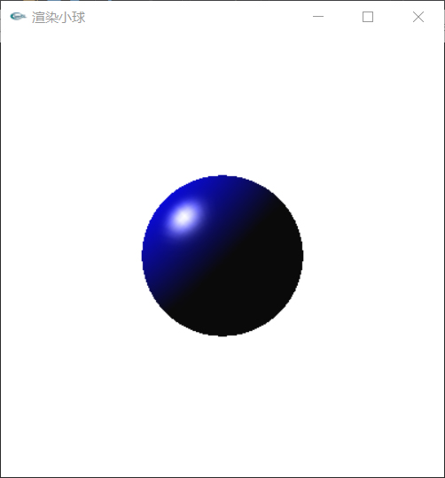
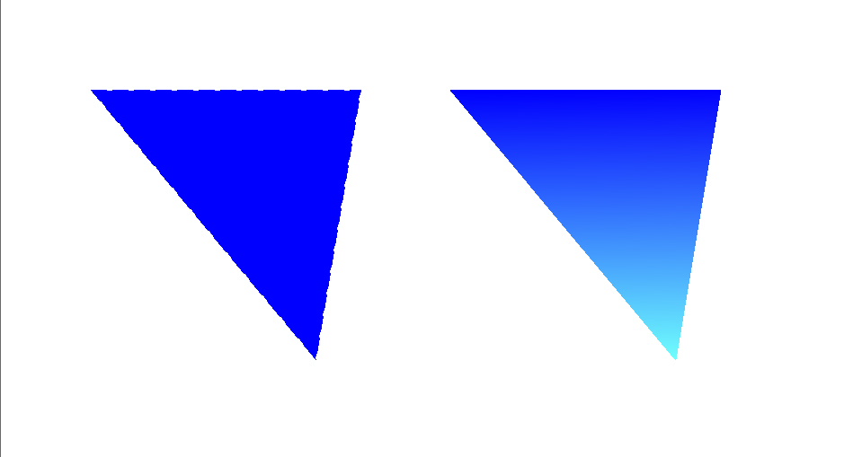

任务一：行走的小人（OpenGL实现）
实验完成中遇到的问题和解决办法：
1、选定腰部节点为根节点。这样可以使小人的上半身和下半身按照相同的运动函数进行移动。
2、绘制立方体和圆柱体。小人的躯干采用长方体实现，而四肢采用圆柱体，不仅可以良好的区分两部分，更符合人体的圆柱形手臂摆动规律。
3、移动函数的构造。因为小人是有大臂和小臂的，在大臂摆动的同时，小臂要实时更新肘关节位置以保证手臂不散架，并且两个臂的摆动频率应相同，而腿部的运动也具有相同的特点。
4、整体的平移。为了让小人走起来，在函数实现时，应先移动坐标轴（矩阵点）然后再绘制身体各部分，四肢的移动也应在整体前进的函数之后实现。
5、调试。对视角的选定、窗口大小、小人运动方向以及速度等因素，应不断调试以达到最佳效果。

任务二：1° 光线追踪（OpenGL实现）
实验操作步骤：
1、学会使用OpenGL库中的光线追踪函数。
2、设置环境光，漫反射光，镜面光以及反射光指数。
3、设置灯源位置和光源散布角度。
4、调试。对视角的选定、窗口大小、大小和颜色等因素，应不断调试以达到最佳效果。

2° Gouraud shading的代码实现（MFC实现）
实验完成中遇到的问题和解决办法：
1、初始化。设置不同的位置和RPG值的斜率参数。
double slope_start;//扫描线开始的斜率
double slope_end;//扫描线结束的斜率
int r1, g1, b1, r2, g2, b2, r3, g3, b3;
double slope_start_r, slope_start_g, slope_start_b;
double slope_end_r, slope_end_g, slope_end_b;//计算三个顶点相关的颜色斜率
int x, y;
int xs, xe;//扫描线开始和结束处的像素
double dx_start = 0, dx_end = 0;//循环内的斜率变化值，采用加法比乘法快
double dr_start = 0, dg_start = 0, db_start = 0;
double dr_end = 0, dg_end = 0, db_end = 0;
double rs, re, gs, ge, bs, be;//循环内对每条扫描线的起始和终止颜色倒斜率
double dr_x, dg_x, db_x;
double r, g, b;
double dx; int dy;
2、判断三角形顶点位置。获取最左上角三角形顶点位置，并按照从宽到窄的方向绘制扫描线。
//平顶情况
if (pt[v1].y == pt[v2].y || pt[v1].y == pt[v3].y)
{
//交换,使pt[v1]点为最左边的顶点
if (pt[v1].y == pt[v2].y)
{
if (pt[v1].x > pt[v2].x)
SWAP(v1, v2);
}
else
{
if (pt[v1].x > pt[v3].x)
SWAP(v1, v3);
}
//交换,使平顶三角形的左上为pt[v1],右上为pt[v3],下顶点为pt[v2]
if (pt[v3].y > pt[v2].y)
SWAP(v2, v3);
dy = pt[v2].y - pt[v1].y;
slope_start = (pt[v2].x - pt[v1].x)*1.0 / dy;//(pt[v2].y-pt[v1].y);
slope_end = (pt[v2].x - pt[v3].x)*1.0 / dy;//(pt[v3].y-pt[v2].y);
GetRGBValue(color[v1], r1, g1, b1);
GetRGBValue(color[v2], r2, g2, b2);
GetRGBValue(color[v3], r3, g3, b3);
slope_start_r = (r2 - r1)*1.0 / dy;
slope_start_g = (g2 - g1)*1.0 / dy;
slope_start_b = (b2 - b1)*1.0 / dy;
slope_end_r = (r2 - r3)*1.0 / dy;
slope_end_g = (g2 - g3)*1.0 / dy;
slope_end_b = (b2 - b3)*1.0 / dy;
}
3、绘制扫描线。对三个定点的位置和RPG值进行纵向插值，每次的纵向插值过程中再进行横向插值，使颜色过渡自然。
//循环执行扫描线
for (y = pt[v1].y; y <= pt[v2].y; y++)
{
xs = Myfloor(pt[v1].x + dx_start);
xe = Myceil(pt[v3].x + dx_end);
rs = r1 + dr_start;
re = r3 + dr_end;
gs = g1 + dg_start;
ge = g3 + dg_end;
bs = b1 + db_start;
be = b3 + db_end;
dx = max(xe - xs, 0.0001);//扫描线长度
dr_x = (re - rs)*1.0 / dx;
dg_x = (ge - gs)*1.0 / dx;
db_x = (be - bs)*1.0 / dx;
r = rs;
g = gs;
b = bs;
//对扫描线的颜色进行横向插值，使之从左向右的颜色过渡是自然的
for (x = xs; x <= xe; x++)
{
COLORREF clr = RGB(min(r, 255), min(g, 255), min(b, 255));
pDC->SetPixel(x, y, clr);//绘制扫描线
//扫描线的颜色变化
r += dr_x;
g += dg_x;
b += db_x;
}
dx_start += slope_start;
dx_end += slope_end;
dr_start += slope_start_r;
dg_start += slope_start_g;
db_start += slope_start_b;
dr_end += slope_end_r;
dg_end += slope_end_g;
db_end += slope_end_b;
}
4、调用上述函数。改写View.cpp中的OnDraw()，绘制三角形轮廓，对顶点填充不同颜色，调用函数进行Gouraud shading渲染。
void CMFCApplication12View::OnDraw(CDC* pDC)
{
CMFCApplication12Doc* pDoc = GetDocument();
ASSERT_VALID(pDoc);
CPen MyPen, *OldPen;
MyPen.CreatePen(PS_DASH, 0, RGB(0, 0, 255));
OldPen = pDC->SelectObject(&MyPen);
CBrush MyBrush, *OldBrush;
MyBrush.CreateSolidBrush(RGB(0, 0, 255));
OldBrush = pDC->SelectObject(&MyBrush);
//原始图像
CPoint pt0[3] = { CPoint(100,100),CPoint(400,100), CPoint(350,400) };
pDC->Polygon(pt0, 3);
CPoint pt2[3] = { CPoint(500,100),CPoint(800,100), CPoint(750,400) };
pDC->Polygon(pt2, 3);
COLORREF color[3] = { pDC->GetPixel(pt2[0].x, pt2[0].y), 16646660, 16646000 };
GouraudShading(pt2, color, pDC);
//清除
pDC->SelectObject(OldPen);
MyPen.DeleteObject();
pDC->SelectObject(OldBrush);
MyBrush.DeleteObject();
}
5、调试。对窗口大小、三角形大小以及各顶点颜色等因素进行调试，以达到最佳效果。

任务三：Final Project
1、实验要求不使用自带的光线追踪函数，因此我自己写了一些基本的ray-tracing方法，并利用这些方法对简单物体进行光线追踪
//L 入射光,R 反射光,N 法向量,V 视点方向，H L和V的角平分线
Point L,R,N,V,H,I;
L = (info.intersection_point - ray).normal();
N = (info.norm).normal();
R = (Point::reflection(L,N)).normal();
V = (info.start - info.intersection_point).normal();
I = intensity;
if (!environment_light_only)
//color = color + Color(suc_mul(I,mod->material->ka));
//else
color = color + Color(suc_mul(Settings::surrounding_light,mod->material->ka))
+ Color(suc_mul(I,mod->material->ks)*pow(dot(R,V),mod->material->n))
+ Color(suc_mul(I,mod->material->kd)*dot(-1*L,N));
else
color = color +Color(suc_mul(Settings::surrounding_light,mod->material->ka));
2、根据上一次做简单ray-tracing的经验，我将上一个任务的光线计算方法运用在这一次实验中，具体方法可见上一个实验。
3、构造场景。在场景中我们画出地板，左侧墙壁，并在地板上绘制出一些不同大小和颜色的小球与长方体，然后利用ray-tracing和shading方法对他们进行再绘制。
/*** 生成红色长方体 ***/
Model* arectangle = new Model(); //新建矩形模型
Material * arectangle_mat = new Material(0,0,Point(0,0,0),Point(0,0,0)); //矩形材质
General_model * arectangle_geo = new General_model();
arectangle_mat->inital(Point(0.1,0.1,0.1),Point(0,0.3,0.4),Point(0.2,0.1,0.5),3); //初始化
//添加矩形的8个顶点
arectangle_geo->add_vertex(Point(0,13000,0));
arectangle_geo->add_vertex(Point(3000,13000,0));
arectangle_geo->add_vertex(Point(3000,16000,0));
arectangle_geo->add_vertex(Point(0,16000,0));
arectangle_geo->add_vertex(Point(0,13000,3000));
arectangle_geo->add_vertex(Point(3000,13000,3000));
arectangle_geo->add_vertex(Point(3000,16000,3000));
arectangle_geo->add_vertex(Point(0,16000,3000));
//根据顶点添加表面
arectangle_geo->add_face(0,1,2);
arectangle_geo->add_face(0,2,3);
arectangle_geo->add_face(0,1,5);
arectangle_geo->add_face(0,5,4);
arectangle_geo->add_face(1,2,6);
arectangle_geo->add_face(1,6,5);
arectangle_geo->add_face(4,5,6);
arectangle_geo->add_face(4,6,7);
//构建几何形状
arectangle->add_geometry(arectangle_geo);
//构造表面材质
arectangle->add_material(arectangle_mat);
//初始化
arectangle->geometry->inital();
//在屏幕中加载
scene->add_model(arectangle);
//进行ray-tracing
raySource->inital(Point(12000,0,8000));
//初始化相机位置
camera->initalize(Point(15000,0,2500),Point(-1,2,0),Point(0,0,1),Settings::scLen,Settings::scWid,100);
//对camera进行设置
camera->pixmap = pixmap;
camera->scene = scene;
camera->screen = screen;
//对场景进行ray-tracing
scene->add_raySource(raySource);
scene->add_illumin(illumin);
camera->castLight();
camera->pixmap->show();
4、实验结果展示：

fig.1. 场景中的所有元素都没有进行ray-tracing：

fig.2. 对场景中地板以外的元素进行ray-tracing:

fig.3. 对场景中所有元素进行ray-tracing: